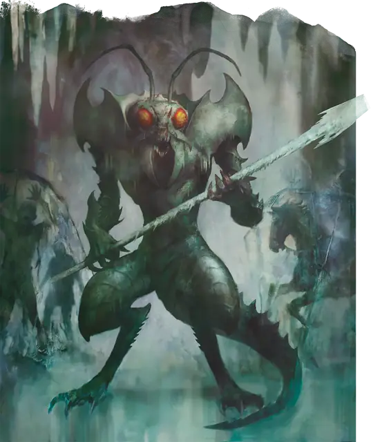

Ледяной дьявол (гелюгон)
Ice Devil
Большое Исчадие (Дьявол), Принципиальное Злое

Класс Защиты 18 Инициатива +7 (17)
Хиты 228 (24к10 + 96)
Скорость 40 футов
| мод | спас | ||
|---|---|---|---|
| СИЛ | 21 | +5 | +5 |
| ЛОВ | 14 | +2 | +7 |
| ТЕЛ | 18 | +4 | +9 |
| мод | спас | ||
|---|---|---|---|
| ИНТ | 18 | +4 | +4 |
| МДР | 15 | +2 | +7 |
| ХАР | 18 | +4 | +9 |
Иммунитеты Огонь, Холод, Яд; Отравленный
Чувства пассивное Восприятие 17, Слепое зрение 120 футов
Языки Инфернальный, Телепатия 120 фт.
Опасность 14 (11 500 опыта; БВ +5)
Особенности
Восстановление дьявола. Когда дьявол умирает запределами Девяти Преисподних, его тело превращается всернистое облако и в тот же миг заново возрождается со всеми Хитами где-то в Девяти Преисподних.
Сопротивление магии. Дьявол совершает с Преимуществом спасброски от заклинаний и прочих магических эффектов.
Действия
Мультиатака. Дьявол совершает три атаки Ледяным копьём. Он может заменить одну из этих атак на атаку Хвостом.
Ледяное копьё. Бросок рукопашной или дальнобойной атаки: +10, досягаемость 5 фт. или дистанция 30/120 фт. Попадание: 14 (2к8 + 5) Колющего урона плюс 10 (3к6) урона Холодом. До конца своего следующего хода цель не может совершать Бонусные действия и Реакции, её Скорость снижается на 10 футов, и в свой ход она может либо переместиться, либо совершить одно действие, но не то и другое одновременно. Промах или попадание: Копьё магическим образом возвращается в руку дьявола сразу после совершения дальнобойной атаки.
Хвост. Бросок рукопашной атаки: +10, досягаемость 10 фт. Попадание: 15 (3к6 + 5) Дробящего урона плюс 18 (4к8) урона Холодом.
Ледяная стена (Перезарядка 6). Дьявол сотворяет заклинание Ледяная стена (8-й круг), не нуждаясь в компонентах (заклинательная характеристика — Интеллект, Сл спасброска заклинаний 17).
Бонус мастерства +5
Среда обитания Девять преисподних
Сокровища Магические
Ледяной дьявол
Дьявол отвращения и интеллектуального высокомерия
Ледяные дьяволы (также известные как гелугоны) — бессердечные стратеги из Девяти Преисподних, отказавшиеся от способности испытывать чувства, чтобы ничто не мешало им претворять свои тёмные планы в жизнь. Мультивселенная для них — лишь задача, которую нужно решить для своих повелителей, во славу Девяти Преисподних и личной выгоды.
Ледяные дьяволы — коварные манипуляторы, умело маскирующие свои капризы под здравый смысл и продуманный план. На службе у злых повелителей Девяти Преисподних они тщательно планируют манёвры армий и ищут пути для реализации своих зловещих замыслов. Благодаря своему боевому мастерству и способности преображать поле боя с помощью ледяных стен, эти насекомоподобные дьяволы могут стать отличными стражниками.
Преследуя свои цели, они подталкивают смертных отказаться от эмпатии и дружеских отношений, чтобы принять эгоистичные и разрушительные видения интеллектуализма*. Добившись изоляции своих жертв, дьяволы вытягивают из них все тайны или заставляют распространять сеющие раздор доктрины под видом разумных идей.
Ледяные дьяволы обычно обитают в замёрзших царствах, в частности на ледяном слое Кании в Девяти Преисподних.
Интеллектуализм — приписывание интеллекту решающей роли в процессе познания действительности, отрыв его от чувственного познания и практики.*